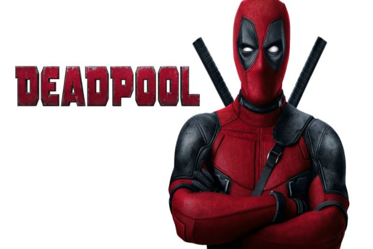
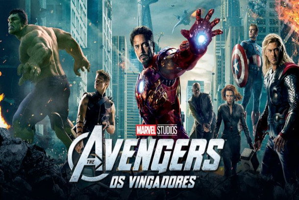
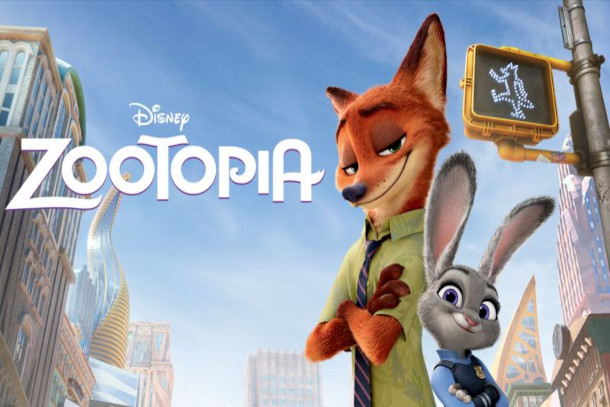
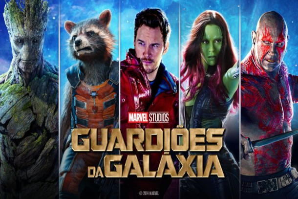
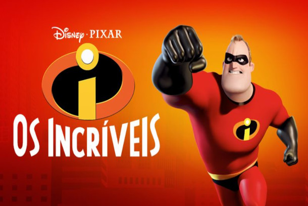
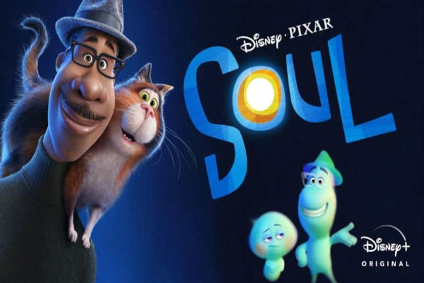
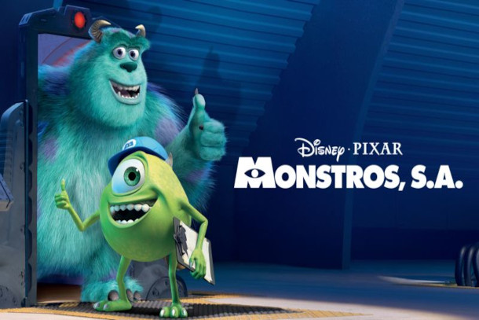
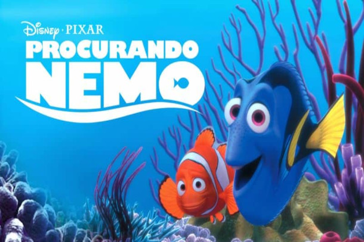
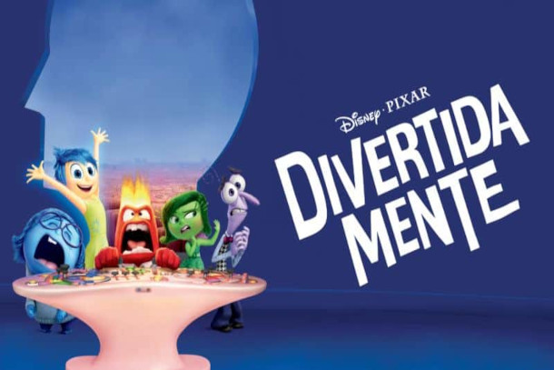

Deadpool
Baseado no anti-herói menos convencional da Marvel Comics, Deadpool conta a história de origem do ex-agente das Forças Especiais que virou o mercenário Wade Wilson. Depois de ser submetido a uma experiência perigosa que o deixou com poderes de cura acelerados, Wilson adota o alter ego Deadpool. Armado com suas novas habilidades e um senso de humor sombrio e perverso, Deadpool persegue o homem que quase destruiu sua vida.
Os Vingadores
Os famosos super-heróis da Marvel, Homem de Ferro, Hulk, Thor e Capitão América, se unem pela primeira vez quando um inimigo inesperado surge e ameaça a segurança e a paz do planeta. Nick Fury, diretor da agência internacional pacificadora S.H.I.E.L.D., se vê em busca de uma equipe para salvar o mundo que está à beira de um desastre.
Zootopia
Na cidade animal de Zootopia, uma esperta raposa que está tentando se dar bem é obrigada a fugir quando é acusada de um crime que não cometeu. A melhor policial de Zootopia, uma prepotente coelha, está em sua perseguição, quando ambos se tornam alvos de uma conspiração. Então eles são forçados a juntarem forças e descobrem que mesmo inimigos naturais podem se tornar melhores amigos.
Guardiões da Galáxia
Em uma aventura espacial com muita ação, este filme expande o Universo Cinemático Marvel para o cosmo, onde o impetuoso aventureiro Peter Quill se vê como objeto de uma caçada implacável após roubar uma misteriosa esfera cobiçada por Ronan, um vilão poderoso com ambições que ameaçam todo o universo. Para fugir do determinado Ronan, Quill é forçado a fazer uma complicada aliança com um quarteto de desajustados: Rocket, um guaxinim fortemente armado; Groot, uma árvore humanoide; a mortal e enigmática Gamora; e Drax, o Destruidor, que é motivado por vingança Mas quando Quill descobre o verdadeiro poder da esfera e o perigo que ela representa para o cosmo, ele deve fazer o melhor que pode para reunir seu grupo desorganizado para uma última e desesperada resistência, com o destino da galáxia em jogo.
Os Incríveis
Dos premiados criadores de “Procurando Nemo”, vencedores do Oscar, vem aí uma aventura repleta de muita ação sobre a pacata e incrível rotina de uma casa cheia de super-heróis. Beto Pêra e sua mulher Helena estavam entre os maiores super-heróis do mundo, salvando inúmeras vidas e combatendo o mal diariamente. Quinze anos depois, eles foram forçados a adotar novas identidades e a mudar-se para o subúrbio, onde vivem como cidadãos comuns com seus três filhos, Violeta, Flecha e Zezé. Louco para voltar à ação, Beto tem a sua chance quando uma misteriosa ligação o intima a comparecer a uma ilha distante para receber uma missão ultrassecreta. Ele logo descobre que só uma família inteira de super-heróis será capaz de salvar o mundo e impedir sua total destruição.
Soul
Por que você é… VOCÊ? Nesta animação da Pixar, Joe Gardner é um professor de música que recebe a chance de tocar na melhor casa de jazz da cidade. Mas um pequeno passo em falso o leva das ruas de Nova York para o Pré-vida – um lugar fantástico onde novas almas obtêm suas personalidades, peculiaridades e interesses antes de irem para a Terra. Determinado a retornar para sua vida, Joe une forças com 22, uma alma precoce que nunca achou graça na experiência humana. E ao tentar desesperadamente mostrar a 22 as vantagens de estar viva, Joe pode acabar descobrindo as respostas para algumas das questões mais importantes da vida.
Monstros S.A.
Sulley e seu falante assistente Mike trabalham na Monstros S.A., a maior fábrica de processamento de gritos de Monstrópolis. A principal fonte de energia do mundo dos monstros provém da coleta dos gritos das crianças humanas. Só que os monstros acreditam que as crianças são tóxicas e, quando uma menininha invade o mundo deles, começa a maior confusão.
Procurando Nemo
Quando o jovem peixe-palhaço Nemo é capturado da Grande Barreira de Corais da Austrália e levado para o aquário de um consultório odontológico, Marlin, o preocupado pai do peixinho, e Dory, a amiga simpática, mas desmemoriada, têm de fazer uma jornada épica para trazê-lo de volta para casa.
Divertida Mente
Crescer pode ser uma jornada turbulenta, e com Riley não é diferente. Conforme ela e suas emoções, Alegria, Medo, Raiva, Nojinho e Tristeza se esforçam para adaptar-se à uma nova vida, uma enorme agitação toma conta do centro de controle em sua mente. Embora Alegria, a principal e mais importante emoção de Riley, tente se manter positiva, as emoções entram em conflitos, às vezes muito divertidos, sobre qual a melhor maneira de viver em uma nova cidade, casa e escola.
Viva: A Vida é uma Festa
Viva – A Vida é uma Festa conta a história de Miguel, que sonha em se tornar um grande músico como seu ídolo, Ernesto de la Cruz, apesar de a música ter sido banida em sua família. Para provar seu talento, Miguel vai à pitoresca Terra dos Mortos, seguindo uma misteriosa sequência de eventos. Ao longo do caminho, ele conhece o trapaceiro Hector e juntos partem em uma jornada para descobrir a verdade por trás da história da família de Miguel. O filme é dirigido por Lee Unkrich (Toy Story 3), codirigido por Adrian Molina (story artist de Universidade Monstros) e tem no elenco Anthony Gonzalez (Miguel), Benjamin Bratt (Ernesto de la Cruz), Gael García Bernal (Hector).